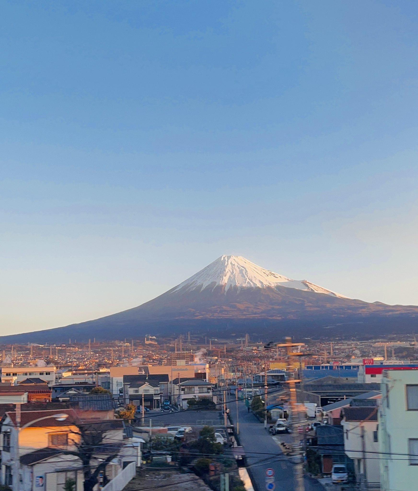
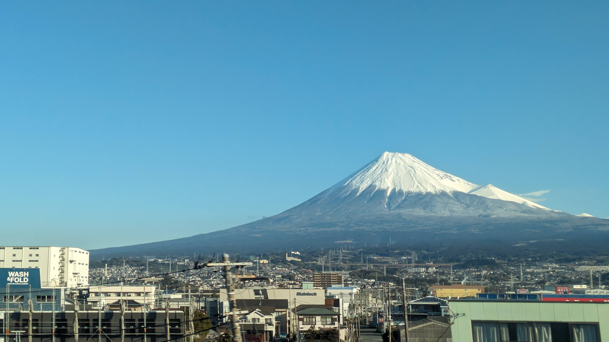
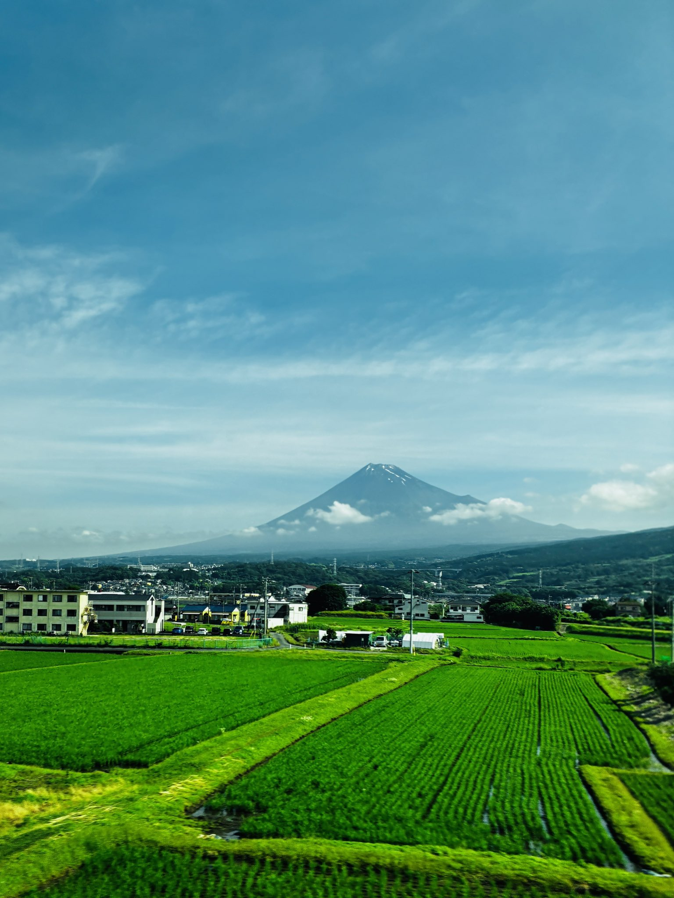
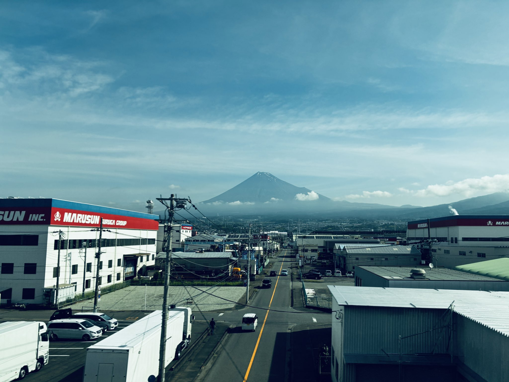
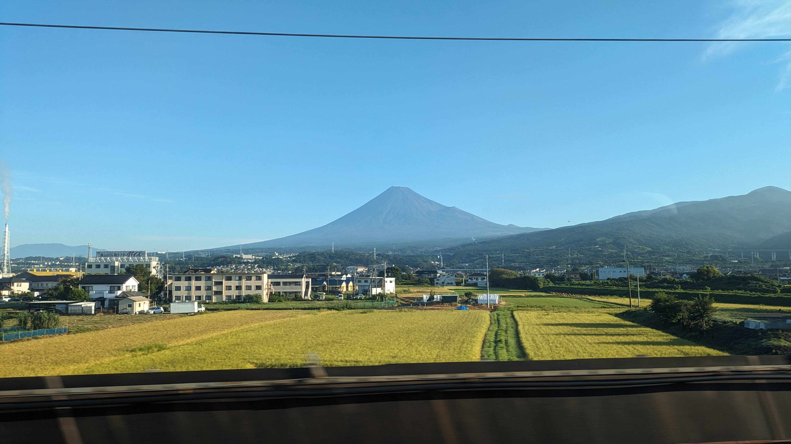
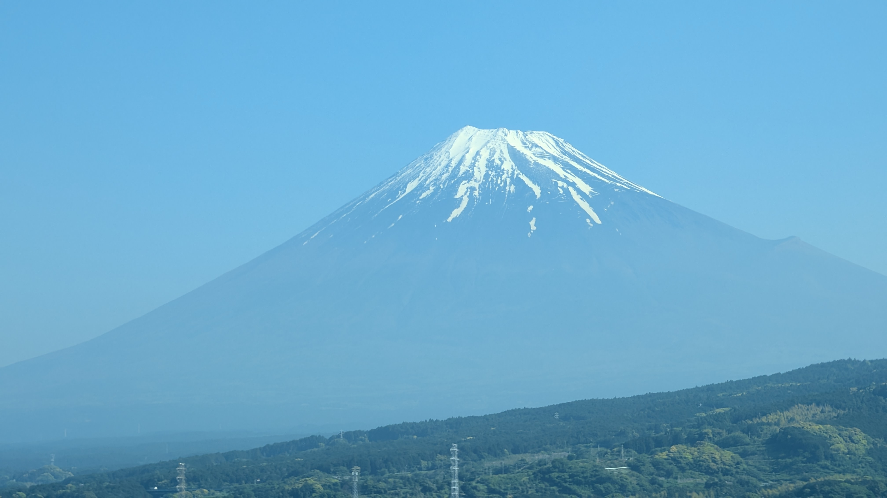

TOKAIDO SHINKANSEN WINDOW VIEW
When can you see Mt. Fuji from the Shinkansen?
Japan's famous three minutes.

- Section
- Mishima → Shin-Fuji
- Seat side
- Seat E · mountain side
- Timing
- About 43 minutes after leaving Tokyo on a Nozomi train
- Photos
- 6 photos
How to find Mt. Fuji
Between Mishima and Shin-Fuji, Mt. Fuji fills the window — for roughly three to four minutes. It grows bigger after each tunnel, and it gets a gasp out of people every single time. Seat E side; be ready a little early.
If you are traveling from Tokyo toward Shin-Osaka, start watching the Seat E · mountain side window as you approach Mishima → Shin-Fuji. If you are traveling toward Tokyo, the order is reversed.
For seat booking, timing from Tokyo, timing from Kyoto or Osaka, and the hidden Left Fuji moment, see the complete Mt. Fuji from the Shinkansen guide.
Why this view matters
Mt. Fuji is one of the window views that make the Tokaido Shinkansen more than a transfer. The train moves fast, so visibility depends on weather, seat position, and timing.
Mt. Fuji in photos




